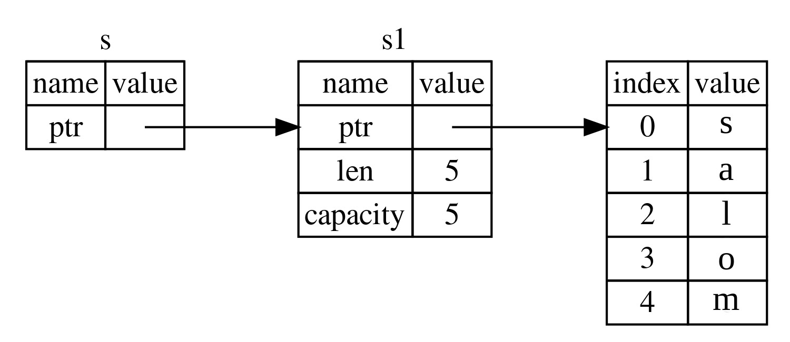

Reference va Borrowing
Ro'yxat 4-5dagi tuple kodi bilan bog'liq muammo shundaki, biz String ni chaqiruvchi funksiyaga qaytarishimiz kerak, shunda biz uzunlikni_hisoblash ga chaqiruvdan keyin ham String dan foydalanishimiz mumkin, chunki String uzunlikni_hisoblash ga ko'chirildi. Buning o'rniga biz String qiymatiga reference(havola) berishimiz mumkin.
Reference pointerga o'xshaydi, chunki u biz ushbu manzilda saqlangan ma'lumotlarga kirish uchun amal qilishimiz mumkin bo'lgan manzildir; bu ma'lumotlar boshqa o'zgaruvchilarga tegishli. Pointerdan farqli o'laroq, reference ma'lumotnomaning amal qilish muddati davomida ma'lum turdagi yaroqli qiymatni ko'rsatishi kafolatlanadi.
Qiymatga egalik qilish o'rniga parametr sifatida obyektga referencega ega bo'lgan uzunlikni_hisoblash funksiyasini qanday aniqlash va ishlatishingiz mumkin:
Fayl nomi: src/main.rs
fn main() { let s1 = String::from("salom"); let len = uzunlikni_hisoblash(&s1); println!("'{}' uzunligi {}.", s1, len); } fn uzunlikni_hisoblash(s: &String) -> usize { s.len() }
Birinchidan, o'zgaruvchilar deklaratsiyasidagi barcha tuple kodi va funksiyani qaytarish qiymati yo'qolganiga e'tibor bering. Ikkinchidan, &s1 ni uzunlikni_hisoblash ga o'tkazamiz va uning definitionida biz String emas, &Stringni olamiz. Ushbu ampersandlar reference ni ifodalaydi va ular sizga biron bir qiymatga ownershiplik qilmasdan murojaat qilish imkonini beradi. 4-5-rasmda ushbu tushuncha tasvirlangan.

4-5-rasm: &String s chizmasi String s1ga ishora qiladi
Eslatma:
&yordamida reference qilishning teskarisi dereferencing bo'lib, u*dereference operatori yordamida amalga oshiriladi. Biz 8-bobda dereference operatoridan baʼzi foydalanishni koʻrib chiqamiz va 15-bobda dereference tafsilotlarini muhokama qilamiz.
Keling, bu yerda funksiya chaqiruvini batafsil ko'rib chiqaylik:
fn main() { let s1 = String::from("salom"); let len = uzunlikni_hisoblash(&s1); println!("'{}' uzunligi {}.", s1, len); } fn uzunlikni_hisoblash(s: &String) -> usize { s.len() }
&s1 sintaksisi bizga s1 qiymatiga refers qiluvchi, lekin unga tegishli bo`lmagan reference yaratish imkonini beradi. Unga egalik qilmaganligi sababli, reference foydalanishni to'xtatganda, u ko'rsatgan qiymat o'chirilmaydi.
Xuddi shunday, funksiya imzosi s parametrining turi reference ekanligini ko'rsatish uchun & dan foydalanadi. Keling, ba'zi tushuntirish izohlarini qo'shamiz:
fn main() { let s1 = String::from("salom"); let len = uzunlikni_hisoblash(&s1); println!("'{}' uzunligi {}.", s1, len); } fn uzunlikni_hisoblash(s: &String) -> usize { // s - Stringga reference(havola) s.len() } // Bu yerda s scopedan chiqib ketadi. Lekin u nazarda tutgan itemga ownership qilmagani // uchun u tashlanmaydi.
s o'zgaruvchisi amal qiladigan doirasi har qanday funksiya parametrining qamrovi bilan bir xil bo'ladi, lekin s foydalanishni to'xtatganda reference ko'rsatilgan qiymat o'chirilmaydi, chunki s ownershipga ega emas. Funksiya referencelarni yaroqli qiymatlar o'rniga parametr sifatida ko'rsatsa, biz ownershipni qaytarish uchun qiymatlarni qaytarishimiz shart emas, chunki bizda hech qachon ownership bo'lmagan.
Malumot yaratish harakatini borrowing(qarz olish) deb ataymiz. Haqiqiy hayotda bo'lgani kabi, agar biror kishi biror narsaga ega bo'lsa, siz undan qarz olishingiz mumkin. Ishingiz tugagach, uni qaytarib berishingiz kerak. Siz unga egalik qilmaysiz.
Xo'sh, agar biz borrowing qilgan narsani o'zgartirishga harakat qilsak nima bo'ladi? 4-6 ro'yxatdagi kodni sinab ko'ring. Spoiler ogohlantirish: bu ishlamaydi!
Fayl nomi: src/main.rs
fn main() {
let s = String::from("salom");
almashtirish(&s);
}
fn almashtirish(some_string: &String) {
some_string.push_str(", rust");
}Ro'yxat 4-6: Borrow qilingan qiymatni o'zgartirishga urinish
Mana xato:
$ cargo run
Compiling ownership v0.1.0 (file:///projects/ownership)
error[E0596]: cannot borrow `*some_string` as mutable, as it is behind a `&` reference
--> src/main.rs:8:5
|
7 | fn almashtirish(some_string: &String) {
| ------- help: consider changing this to be a mutable reference: `&mut String`
8 | some_string.push_str(", rust");
| ^^^^^^^^^^^^^^^^^^^^^^^^^^^^^^^ `some_string` is a `&` reference, so the data it refers to cannot be borrowed as mutable
For more information about this error, try `rustc --explain E0596`.
error: could not compile `ownership` due to previous error
O'zgaruvchilar standart bo'yicha o'zgarmas bo'lganidek, referencelar ham shunday. Bizga reference biror narsani o'zgartirishga ruxsat berilmagan.
O'zgaruvchan Referencelar
Biz 4-6 ro'yxatdagi kodni tuzatishimiz mumkin, buning o'rniga o'zgaruvchan referencedan foydalanadigan bir nechta kichik sozlashlar bilan borrow qilingan qiymatni o'zgartirishimiz mumkin:
Fayl nomi: src/main.rs
fn main() { let mut s = String::from("salom"); change(&mut s); } fn change(some_string: &mut String) { some_string.push_str(", dunyo"); }
Avval s ni mut qilib o'zgartiramiz. Keyin biz &mut s bilan o'zgaruvchan reference yaratamiz, bu yerda biz change funksiyasini chaqiramiz va some_string: &mut String bilan o'zgaruvchan referencei qabul qilish uchun funksiya signatureni yangilaymiz. Bu change funksiyasi olingan qiymatni o'zgartirishini aniq ko'rsatadi.
O'zgaruvchan referencelar bitta katta cheklovga ega: agar sizda qiymatga o'zgaruvchan reference bo'lsa, sizda bu qiymatga boshqa referencelar bo'lishi mumkin emas. s ga ikkita o'zgaruvchan reference yaratishga urinayotgan ushbu kod muvaffaqiyatsiz bo'ladi:
Fayl nomi: src/main.rs
fn main() {
let mut s = String::from("salom");
let r1 = &mut s;
let r2 = &mut s;
println!("{}, {}", r1, r2);
}Mana xato:
$ cargo run
Compiling ownership v0.1.0 (file:///projects/ownership)
error[E0499]: cannot borrow `s` as mutable more than once at a time
--> src/main.rs:5:14
|
4 | let r1 = &mut s;
| ------ first mutable borrow occurs here
5 | let r2 = &mut s;
| ^^^^^^ second mutable borrow occurs here
6 |
7 | println!("{}, {}", r1, r2);
| -- first borrow later used here
For more information about this error, try `rustc --explain E0499`.
error: could not compile `ownership` due to previous error
Bu xatolik bu kodning yaroqsiz ekanligini bildiradi, chunki biz bir vaqtning o'zida bir necha marta o'zgaruvchan s ni borrow qila ololmaymiz. Birinchi o'zgaruvchan borrow r1 da bo'lib, u println! da ishlatilgunga qadar davom etishi kerak, lekin bu o'zgaruvchan referenceni yaratish va undan foydalanish o'rtasida, biz r2 da r1 bilan bir xil ma'lumotlarni olgan boshqa o`zgaruvchan reference yaratishga harakat qildik.
Bir vaqtning o'zida bir xil ma'lumotlarga bir nechta o'zgaruvchan referencelarni oldini oluvchi cheklov mutatsiyaga imkon beradi, lekin juda nazorat ostida. Bu yangi Rustaceanlar bilan kurashadigan narsa, chunki aksariyat tillar xohlagan vaqtda mutatsiyaga o'tishga imkon beradi. Ushbu cheklovning afzalligi shundaki, Rust kompilyatsiya vaqtida data raceni oldini oladi. Data race poyga holatiga o'xshaydi va bu uchta xatti-harakatlar sodir bo'lganda sodir bo'ladi:
- Ikki yoki undan ortiq pointerlar bir vaqtning o'zida bir xil ma'lumotlarga kirishadi.
- Pointerlardan kamida bittasi ma'lumotlarga yozish uchun ishlatiladi.
- Ma'lumotlarga kirishni sinxronlashtirish uchun hech qanday mexanizm ishlatilmaydi.
Data race aniqlanmagan xatti-harakatlarga olib keladi va ularni runtimeda kuzatib borishga harakat qilayotganingizda tashxis qo'yish va tuzatish qiyin bo'lishi mumkin; Rust data racelari bilan kodni kompilyatsiya qilishni rad etish orqali bu muammoni oldini oladi!
Har doimgidek, biz bir vaqtning o'zida emas, balki bir nechta o'zgaruvchan referencelarga ruxsat beruvchi yangi scope yaratish uchun jingalak qavslardan foydalanishimiz mumkin:
fn main() { let mut s = String::from("salom"); { let r1 = &mut s; } // r1 bu yerda scopedan chiqib ketadi, shuning uchun biz hech //qanday muammosiz yangi reference qilishimiz mumkin. let r2 = &mut s; }
Rust o'zgaruvchan va o'zgarmas referencelarni birlashtirish uchun shunga o'xshash qoidani qo'llaydi.
fn main() {
let mut s = String::from("salom");
let r1 = &s; // muammo yo'q
let r2 = &s; // muammo yo'q
let r3 = &mut s; // KATTA MUAMMO
println!("{}, {}, va {}", r1, r2, r3);
}Mana xato:
$ cargo run
Compiling ownership v0.1.0 (file:///projects/ownership)
error[E0502]: cannot borrow `s` as mutable because it is also borrowed as immutable
--> src/main.rs:6:14
|
4 | let r1 = &s; // muammo yo'q
| -- immutable borrow occurs here
5 | let r2 = &s; // muammo yo'q
6 | let r3 = &mut s; // KATTA MUAMMO
| ^^^^^^ mutable borrow occurs here
7 |
8 | println!("{}, {}, va {}", r1, r2, r3);
| -- immutable borrow later used here
For more information about this error, try `rustc --explain E0502`.
error: could not compile `ownership` due to previous error
Voy! Bizda shuningdek o'zgaruvchan referencelar bo'lishi mumkin emas, bizda bir xil qiymatga o'zgarmas reference mavjud.
O'zgarmas reference foydalanuvchilari qiymat birdaniga ularning ostidan o'zgarishini kutishmaydi! Biroq, bir nechta o'zgarmas referencelarga ruxsat beriladi, chunki faqat ma'lumotlarni o'qiyotgan hech kim boshqa hech kimning ma'lumotni o'qishiga ta'sir qilish qobiliyatiga ega emas.
E'tibor bering, referencening ko'lami u kiritilgan joydan boshlanadi va oxirgi ishlatilgan vaqtgacha davom etadi. Masalan, ushbu kod kompilyatsiya qilinadi, chunki o'zgarmas referencelarning oxirgi ishlatilishi, println!, o'zgaruvchan reference kiritilishidan oldin sodir bo'ladi:
fn main() { let mut s = String::from("salom"); let r1 = &s; // muammo yo'q let r2 = &s; // muammo yo'q println!("{} va {}", r1, r2); // r1 va r2 o'zgaruvchilari bu nuqtadan keyin ishlatilmaydi let r3 = &mut s; // muammo yo'q println!("{}", r3); }
r1 va r2 o'zgarmas referencelar doirasi println dan keyin tugaydi! ular oxirgi marta ishlatiladigan joy, ya'ni o'zgaruvchan referencelar r3 yaratilishidan oldin. Ushbu doiralar bir-biriga mos kelmaydi, shuning uchun bu kodga ruxsat beriladi: kompilyator reference doirasi tugashidan bir nuqtada endi foydalanilmayotganini aytishi mumkin.
Borrowingdagi xatolar ba'zida asabiylashsa ham, Rust kompilyatori potentsial xatoni erta (runtimeda emas, balki kompilyatsiya vaqtida) ko'rsatib beradi va muammo qayerda ekanligini aniq ko'rsatadi. Keyin nima uchun ma'lumotlaringiz siz o'ylagandek emasligini kuzatishingiz shart emas.
Dangling Referencelar
Pointerlari bo'lgan tillarda, dangling pointerni - xotiradagi boshqa birovga berilgan bo'lishi mumkin bo'lgan joyga reference qiluvchi pointerni - bu xotiraga pointerni saqlab qolgan holda, xotirani biroz bo'shatish orqali yaratish oson. Rust-da, aksincha, kompilyator referencelar hech qachon dangling referencelar bo'lmasligini kafolatlaydi: agar sizda ba'zi ma'lumotlarga reference bo'lsa, kompilyator ma'lumotlarga referencedan oldin ma'lumotlar doirasi tashqariga chiqmasligini ta'minlaydi.
Keling, Rust ularni kompilyatsiya vaqtida xatosi bilan qanday oldini olishini ko'rish uchun dangling reference yaratishga harakat qilaylik:
Fayl nomi: src/main.rs
fn main() {
let dangle_reference = dangle();
}
fn dangle() -> &String {
let s = String::from("salom");
&s
}Mana xato:
$ cargo run
Compiling ownership v0.1.0 (file:///projects/ownership)
error[E0106]: missing lifetime specifier
--> src/main.rs:5:16
|
5 | fn dangle() -> &String {
| ^ expected named lifetime parameter
|
= help: this function's return type contains a borrowed value, but there is no value for it to be borrowed from
help: consider using the `'static` lifetime
|
5 | fn dangle() -> &'static String {
| +++++++
For more information about this error, try `rustc --explain E0106`.
error: could not compile `ownership` due to previous error
Ushbu xato xabari biz hali ko'rib chiqmagan xususiyatga ishora qiladi: lifetime. Biz 10-bobda lifetime batafsil muhokama qilamiz. Ammo, agar siz lifetime haqidagi qismlarga e'tibor bermasangiz, xabarda ushbu kod nima uchun muammo ekanligining kaliti mavjud:
this function's return type contains a borrowed value, but there is no value
for it to be borrowed from
Keling, dangle kodimizning har bir bosqichida nima sodir bo'layotganini batafsil ko'rib chiqaylik:
Fayl nomi: src/main.rs
fn main() {
let dangle_reference = dangle();
}
fn dangle() -> &String { // dangle Stringga referencei qaytaradi
let s = String::from("salom"); // s - yangi String
&s // biz Stringga referenceni return qilamiz, s
} // Bu yerda s scopedan chiqib ketadi va drop qilinadi. Uning xotirasi yo'qoladi.
// Xavf!s dangle ichida yaratilganligi sababli, dangle kodi tugagach, s ajratiladi. Ammo biz unga referenceni qaytarishga harakat qildik. Bu shuni anglatadiki, bu reference yaroqsiz Stringga ishora qiladi. Bu yaxshi emas! Rust bizga buni qilishga ruxsat bermaydi.
Bu yerda yechim to'g'ridan-to'g'ri String ni return qilishdir:
fn main() { let string = dangle_yoq(); } fn dangle_yoq() -> String { let s = String::from("salom"); s }
Bu hech qanday muammosiz ishlaydi. Ownership boshqa joyga ko'chiriladi va hech narsa ajratilmaydi.
Reference Qoidalari
Keling, referencelar haqida nimalarni muhokama qilganimizni takrorlaymiz:
- Istalgan vaqtda siz yoki bitta oʻzgaruvchan referencega yoki istalgan miqdordagi oʻzgarmas referencelarga ega boʻlishingiz mumkin.
- Referencelar har doim yaroqli bo'lishi kerak.
Keyinchalik, biz boshqa turdagi referenceni ko'rib chiqamiz: slicelar.